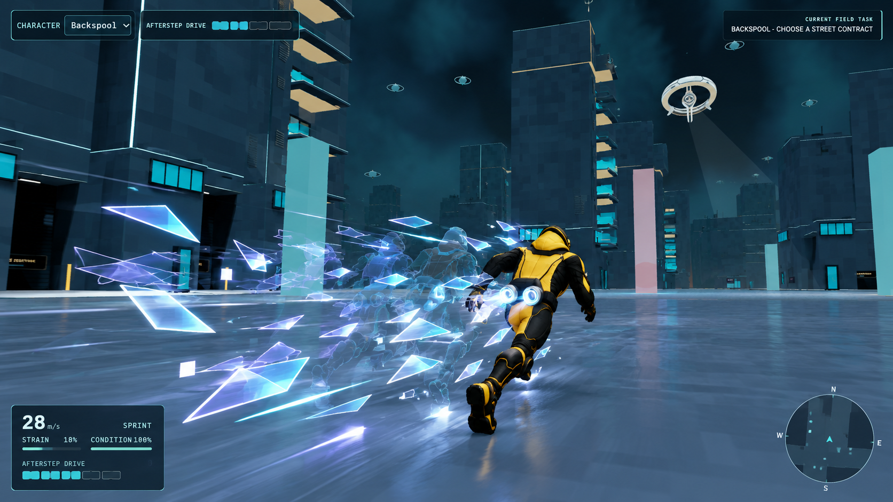
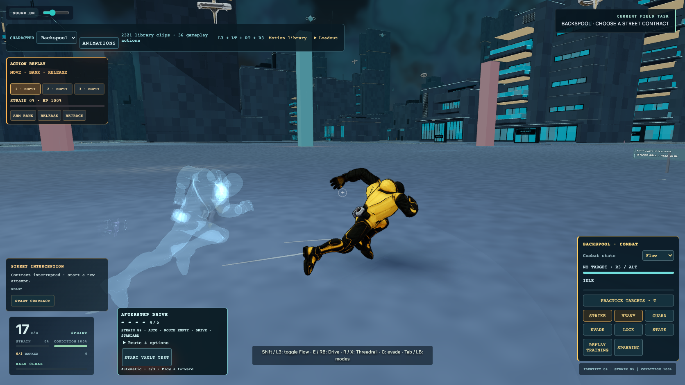
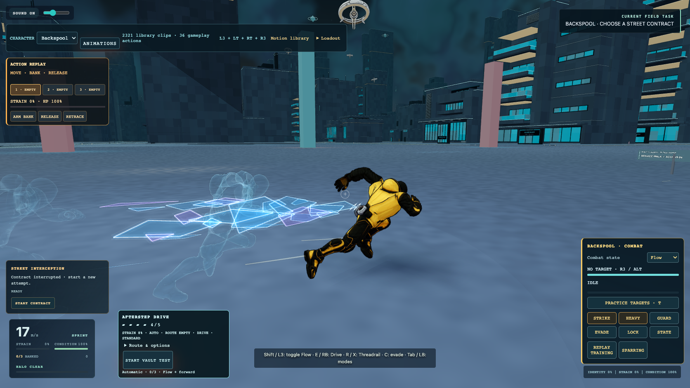
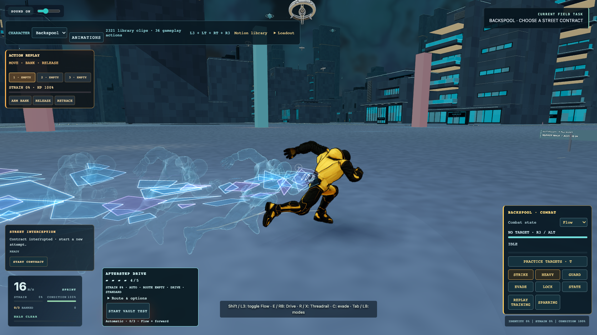
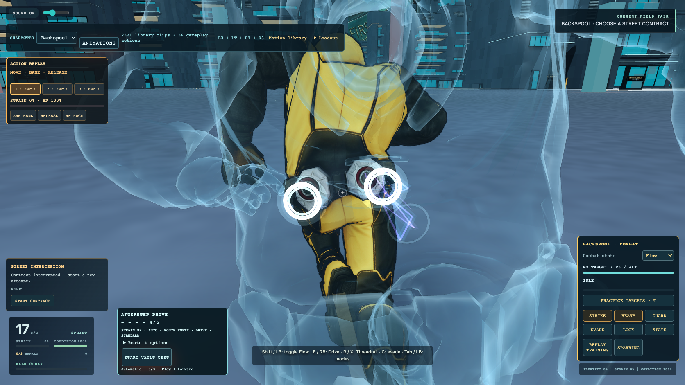

Afterstep Drive — actual gameplay
Same start and keyboard sprint/Drive sequence. Camera: rear three-quarter. No movement parameters changed.
Supplied art target

Before

After

Later trail: retained source poses

Twin outlet attachment

These captures are real-time approximations of the supplied art reference. The existing animation, city lighting, suit and HUD remain unchanged.